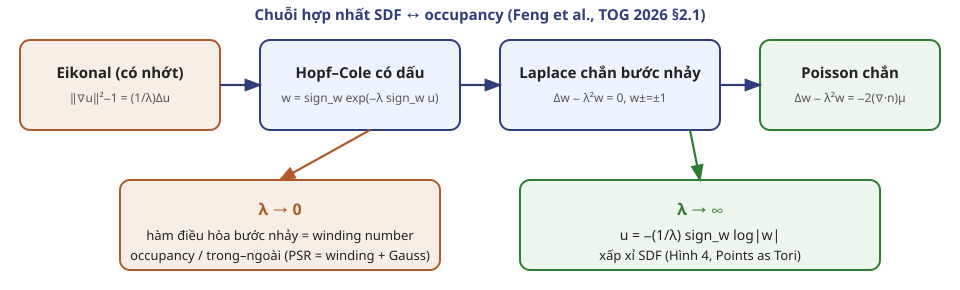
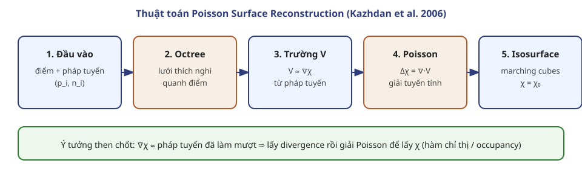
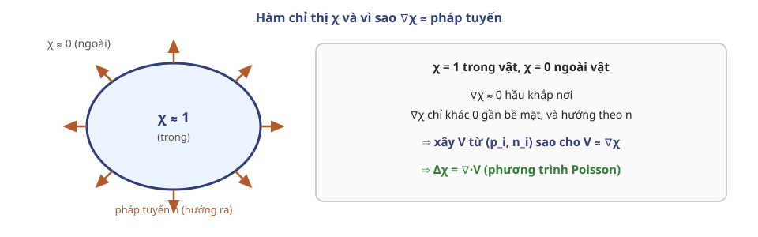
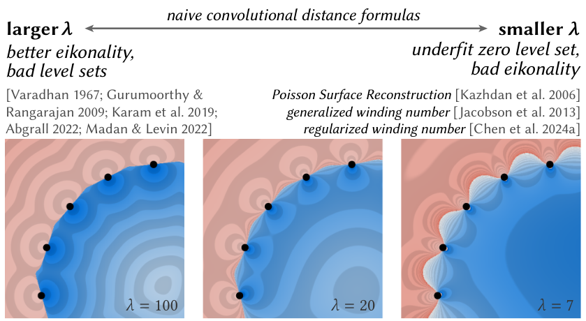
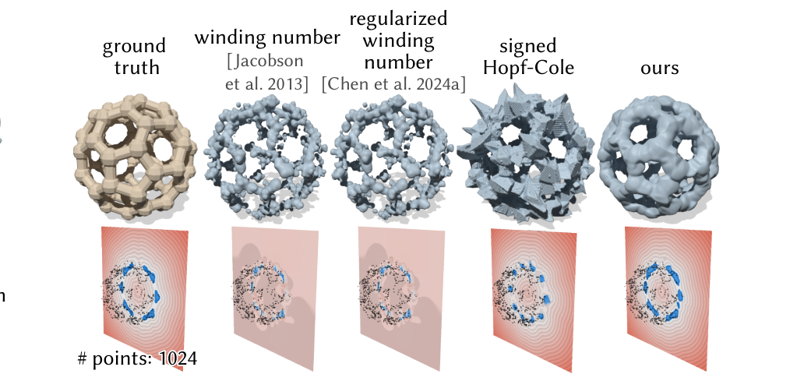

Điều kiện biên Dirichlet/Neumann trong các PDE sau đây luôn hiểu theo giới hạn một phía này — đặc biệt quan trọng khi $\Omega$ là “khe” mở trong $\mathbb R^d$ (Phụ lục B).
B. Hợp nhất SDF và occupancy

Tóm tắt §2.1 Points as Tori: một PDE, hai giới hạn.
$\nabla G^\lambda\cdot\mathbf n$: thế lớp kép Yukawa (Eq. 13).
$w$ suy giảm mũ ở $\infty$ — khác SDF $|u|\to\infty$.
Đọc trực giác
Mỗi điểm bề mặt “bắn” một đóng góp có dấu theo pháp tuyến, tắt dần theo khoảng cách với tốc độ $\lambda$. Tổng hợp lại cho trường occupancy / quasi-distance.
C. Thuật toán Poisson Surface Reconstruction

Pipeline Kazhdan, Bolitho, Hoppe (SGP 2006), neo vào $\Delta\chi=\nabla\cdot V$.
Mục tiêu PSR: từ đám mây điểm có hướng $({\mathbf p}_i,{\mathbf n}_i)$ suy ra mesh tam giác kín xấp xỉ bề mặt.
Bước 0 — Ý tưởng: hàm chỉ thị $\chi$

$\nabla\chi$ chỉ sống gần bề mặt và song song pháp tuyến.
$\operatorname{Nbr}(i)$: các nút gần điểm $\mathbf p_i$.
$\alpha_{o,i}$: trọng số nội suy (thường trilinear theo vị trí $\mathbf p_i$ trong ô).
$\mathbf n_i$: hướng đóng góp.
Trực giác
Mỗi mẫu “phết” pháp tuyến của nó lên một vùng nhỏ quanh $\mathbf p_i$. Xa bề mặt, $V\approx\mathbf 0$. Gần bề mặt, $V$ chỉ ra ngoài giống $\nabla\chi$.
So với Eq. 11 của Points as Tori: vai trò của $\mathbf n\,\mu_\Omega$ chính là nguồn trên bề mặt; PSR xấp xỉ nguồn đó bằng mẫu điểm + làm mượt (Gauss/B-spline).
Bước 4 — Giải phương trình Poisson
$$\Delta\chi=\nabla\cdot V$$
Dạng yếu (weak form)
Nhân hai vế với hàm thử $\psi$ trong không gian B-spline, tích phân từng phần:
Số hạng phạt giá trị $\chi$ tại mẫu điểm — bề mặt bám dữ liệu hơn, giảm “phồng” ở vùng thưa.
Khác $\lambda$ của Points as Tori
Đây là chắn/ràng buộc trên bề mặt mẫu, không phải số hạng $-\lambda^2 w$ thể tích trong Eq. 5/9/11.
Dù screened, đầu ra vẫn là indicator-like, không tự động thành SDF eikonal.
D. Vì sao PSR không cho SDF trên point cloud

Feng et al., Hình 5: trade-off $\lambda$ trên công thức khoảng cách dạng tích chập ngây thơ.
Trade-off tái tạo $\leftrightarrow$ khoảng cách
$\lambda$ lớn (cạnh SDF)
Tính eikonal tốt hơn.
Trường “bám” điểm mẫu gần nhất.
Zero level set lởm chởm / overfitting (Hình 5 trái).
$\lambda$ nhỏ (cạnh PSR / winding)
Nội suy tốt hơn giữa các điểm.
Zero level set mượt hơn.
$\|\nabla u\|\neq 1$: không còn SDF thật (Hình 5 giữa/phải).
PSR chọn chủ ý phía tái tạo. Muốn SDF query-pointwise, cần công thức khác — Points as Tori dùng Eq. 17 với proxy torus.
So sánh trực quan (Hình 8)

Feng et al., Hình 8 — 1024 điểm: winding / winding chính quy / Hopf–Cole có dấu / Points as Tori.
Winding & biến thể
Cho occupancy; với dữ liệu thưa dễ lỗi; không xuất SDF dùng ngay.
Points as Tori
Vẫn một lượt, gần nhanh bằng winding, vừa mesh (zero level) vừa SDF query được.
Bản đồ khái niệm cuối
Occupancy / indicator
SDF
PDE (PAT)
$\lambda\to 0$: Laplace/Poisson bước nhảy
$\lambda$ lớn + Hopf–Cole ngược
Thuật toán cổ điển
PSR / Screened PSR, winding
khoảng cách tới mesh; neural SDF; PAT
Đầu ra điển hình
mesh (marching cubes)
truy vấn $u(\mathbf x)$ tại điểm tùy ý
Eikonal $\|\nabla u\|=1$
không
có (xấp xỉ)
Point cloud thưa
PSR mạnh
Eq. 14/16 yếu → cần Eq. 17 + proxy
Câu hỏi thảo luận
Từ Eq. 9, giải thích bằng lời vì sao $w^{\pm}=\pm 1$ mã hóa trong–ngoài, trong khi $|w|$ (sau log) mã hóa khoảng cách.
Trong PSR, tại sao giải $\Delta\chi=\nabla\cdot V$ thay vì tích phân trực tiếp $\chi=\int V$? (Gợi ý: $V$ ước lượng được chỉ gần bề mặt, không phải gradient đầy đủ mọi nơi.)
Screened PSR thêm hạng $\|\chi(\mathbf p_i)-\chi_0\|^2$. Điều đó thay đổi zero level set thế nào so với PSR thuần?
Vì sao nhân đôi $\lambda$ trong Eq. 11 không biến PSR thành SDF?
Tài liệu tham khảo
Feng, N., Gkioulekas, I., Crane, K. (2026). Points as Tori: Fast Pointwise Signed Distance for Point Clouds. ACM TOG 45(4). §2.1, Phụ lục B. DOI: 10.1145/3811385. Bản dịch: points-as-tori/paper_vi/.
Kazhdan, M., Bolitho, M., Hoppe, H. (2006). Poisson Surface Reconstruction. Symp. Geometry Processing.
Kazhdan, M., Hoppe, H. (2013). Screened Poisson Surface Reconstruction. ACM TOG.
Jacobson, A. et al. (2013). Robust Inside-Outside Segmentation (generalized winding numbers). ACM TOG.
Chen, Y. et al. (2024a). chính quy hóa winding / liên hệ PSR (trích trong PAT).
Lipman, Y. (2021). phase / signed eikonal nhớt (cảm hứng Hopf–Cole có dấu).
Mở trang chiếu: slide/nghien-cuu-3d/06-poisson-sdf.html · phím S xem ghi chú người nói.